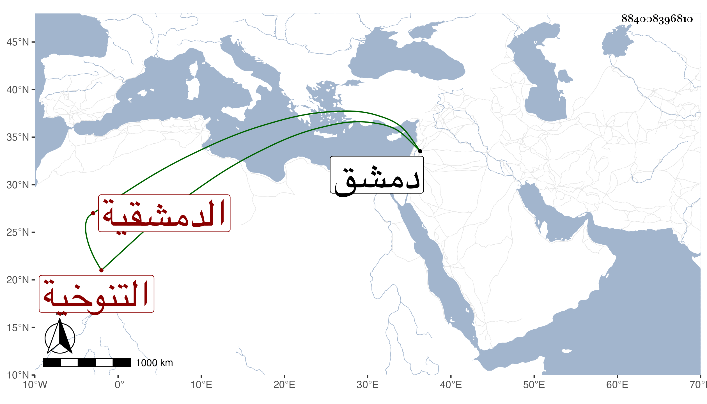

0902Sakhawi.DawLamic.ITO20230111-ara1.EIS1600.884008396810
Biography ID: 884008396810
635
فاطمة ابنة محمد بن أحمد بن محمد بن عثمان بن المنجا أم الحسن ابنة العز التنوخية الدمشقية , ولدت سنة اثنتي عشرة وسبعمائة تقريبا وأسمعت على عبد الله بن الحسين بن أبي التائب الثالث عشر من حديث الخراساني وجزء حنبل وثاني حديث على بن حرب وغيرها وعلى غيره ؛ وأجاز لها التقي سليمان وابو بكر الدشتي والمطعم وابن عساكر وابن الشيرازى وابو بكر بن أحمد بن عبد الدائم واسمعيل بن يوسف بن مكتوم وست الوزراء ابنة عمر بن المنجا وجمع جم تفردت بالرواية عنهم في الدنيا وحدثت بالكثير سمع منها الائمة ووصل عليها شيخنا بالاجازة جملة وقال ماتت في حصار دمشق في ربيع الآخر أو الذي بعده سنة ثلاث ، وتبعه المقريزى في عقوده جازما بربيع الآخر وما علمت مستنده رحمها الله .
